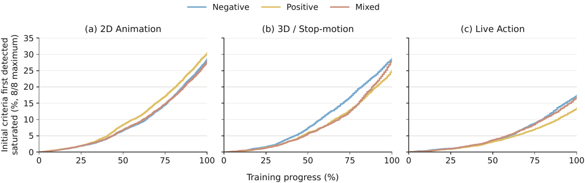
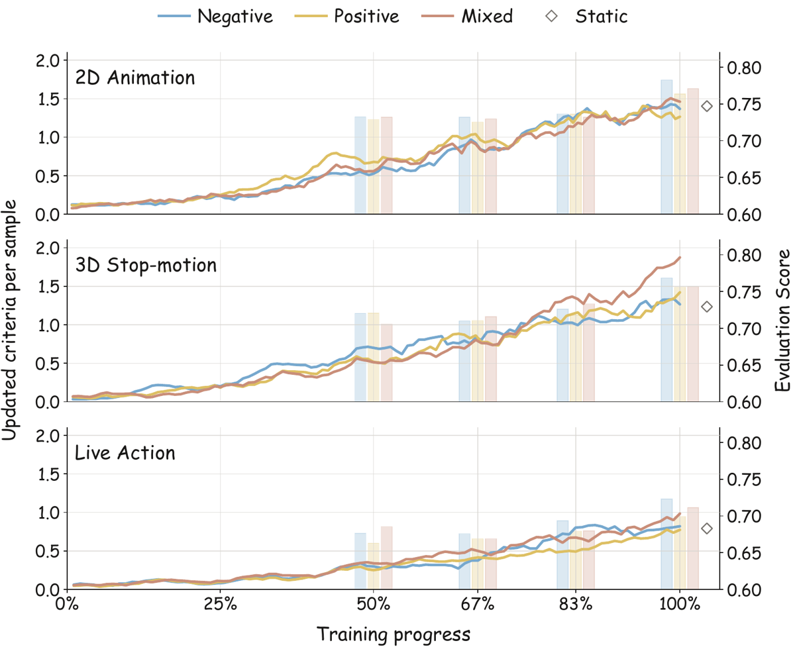
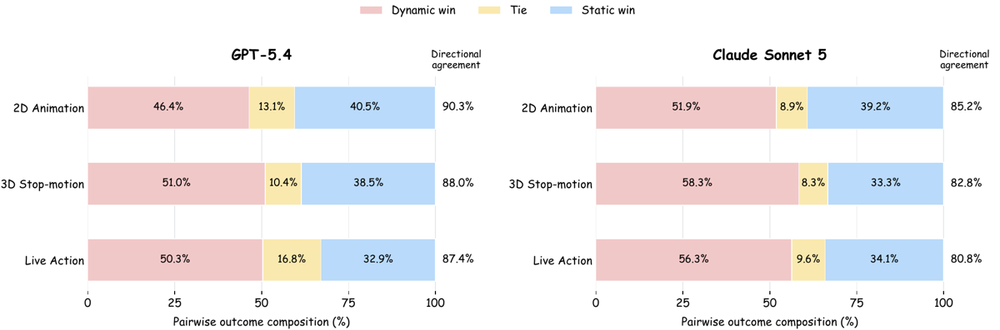

Mémo de vérification. Travail fait depuis le clone du dépôt (
/private/tmp/.../scratchpad/repo), le dossier d'origine étant inaccessible. Sources :papers/2610.25434/full.tex(2 131 lignes, lu intégralement par tranches, annexes A–G comprises),paper.pdf(numérotation des floats recoupée — voir §8),meta.json, et le dépôt de code cloné + le dataset HF téléchargé et inspecté. Trois conclusions de ce mémo viennent du code et des données, pas du PDF (§3, §7.0).⚠️ Piège d'attribution à signaler d'emblée : la source est compilée avec
googledeepmind.cls(« Basic style file adapted from the Google DeepMind open-access paper template »), etsrc/contientfigures/qwen-logo.png. Aucun auteur Google ou DeepMind. Les affiliations réelles sont ICT/CAS, UCAS, UIUC et la Qwen Business Unit d'Alibaba. Tout extracteur d'affiliation basé sur la classe LaTeX se trompera.
Dans un GRPO à reward de rubrique, un critère devient éligible au remplacement quand les 8 rollouts du groupe courant reçoivent tous son score maximum ; un générateur (GPT-5.4) le réécrit alors en un check d'une différence de qualité observée entre ces mêmes 8 réponses, le juge rescore les remplaçants sur ces mêmes réponses, et le reward de l'update courant mélange scores remplacés et scores retenus — le tout à nombre de critères, identifiants, maxima et dénominateur constants.
Claim principal, formulé précisément : sur de la génération de scripts vidéo en chinois, à même base (Qwen3-4B-Instruct-2507), mêmes données, même config GRPO, même nombre de steps et 4 seeds (0, 1, 2, 42) moyennés, la variante sample-level Negative (remplaçants formulés comme « plein crédit quand le défaut est absent ») atteint 75,80 contre 71,98 pour la baseline Sample-Static appariée, soit +3,82 points en moyenne sur trois styles, et bat Mixed (+1,17) et Positive (+1,84) sous le même trigger, le même budget et la même procédure de scoring [Tab. 2].
Pourquoi ce papier compte ici : c'est l'instance la plus propre et la plus complète du
mécanisme que notre corpus tient pour dangereux — supprimer un critère parce qu'il paraît
saturé. Et sa lecture ne donne pas le verdict attendu : RARE évite le mode d'échec de
2609.35646 (les critères uniformément bas sont explicitement retenus), documente
lui-même la régression sur les exigences supprimées (Tab. 6), et publie une infrastructure de
rejouabilité du reward (hash de rubrique + journal de versions) que personne d'autre dans le
corpus ne publie. Mais il ne distingue en aucune façon « saturé parce qu'acquis » de « saturé
parce que jamais testé », n'a aucun bras placebo, et fait valider la rubrique révisée par
le juge qui produit le reward.
⚠️ Fait non dit dans le corps du papier, établi par la carte du dataset et le code : la
tâche est entièrement en chinois (language: ['zh'] sur HF ; prompts juge et writer en
chinois dans rubric/; les 18 cas qualitatifs du dépôt sont en chinois avec traduction
anglaise séparée). Le papier ne mentionne la langue nulle part sauf « Translated from Chinese »
sous Tab. 17. Pour juger les comparaisons de modèles de référence, c'est décisif (§7.0, item I10).
Le papier annonce « Each rubric contains $3 \leq k \leq 8$ criteria » [App. A.1]. Les données publiées contredisent la plage — vérifié sur les 5 393 lignes d'entraînement téléchargées :
| Style | lignes | k = 4 | k = 5 | k = 3, 6, 7, 8 | Σm_j (mode) |
|---|---|---|---|---|---|
| 2D animation | 2 125 | 2 001 | 124 | 0 | 10 |
| 3D/stop-motion | 1 759 | 1 659 | 100 | 0 | 10 |
| Live action | 1 509 | 1 411 | 98 | 0 | 10 |
| Total | 5 393 | 5 071 (94,0 %) | 322 (6,0 %) | 0 | 9–13 |
Donc k = 4 dans 94 % des cas, max_points ∈ {2, 3}, et chaque rubrique contient le critère
fixe de content density (présent dans les 5 393 lignes). Avec un budget B = 3, une seule
révision acceptée peut donc remplacer 3 critères sur 4 — 75 % de la rubrique en un step, et
« retaining all other criteria and scores » (abstract) signifie alors : retenir un critère,
celui qui est fixe par construction. Le papier ne donne jamais k empirique.
Non précisé en heures. Le seul travail humain est l'évaluation de préférence : cinq doctorants en informatique, 36 paires chacun (12 par style), 3 notations indépendantes par paire, 60 paires au total, identités de modèles masquées, consentement éclairé déclaré [App. A.3.1, Ethics statement]. Aucun expert du domaine (scénariste, producteur). Aucun coût API chiffré. Aucune annotation humaine n'entre dans le reward ni dans les 12 métriques.
Il n'y a pas d'environnement au sens agentique. C'est un harness de génération single-turn + un harness de jugement. Le README le dit : « The released pipeline is single-turn; tool-agent and search reproductions are intentionally outside this release. »
gpu_memory_utilization = 0.7.2610.15778 mesure à 97/100 d'acceptation. Mais le juge d'évaluation v9, lui, impose une
étape input_integrity qui fait échouer requirement coverage, pacing et payoff quand le
script est incomplet [App. F.5]. L'asymétrie joue dans le bon sens (le reward tolère, l'éval
punit), donc la troncature n'est pas un canal qui gonfle le chiffre de tête — mais elle
explique probablement l'effondrement du bras SFT (Cov. 9,58–13,92).verl/trainer/ppo/ray_trainer.py:_prepare_grpo_judge_inputs : un
rollout dont le juge a échoué reçoit 0 uniquement comme placeholder de tenseur, puis son
response_mask est mis à zéro et son uid est réécrit en un groupe singleton
("__judge_masked__", i) — « A unique singleton group plus an all-zero calculation mask
guarantees zero advantage and keeps failures out of every valid prompt group ». Un groupe
avec moins de 2 jugements valides est entièrement masqué. Les métriques
judge_valid_rate, judge_invalid_samples, judge_unrankable_valid_samples sont loguées.
Et strict_saturated_ids renvoie [] si un seul rollout du groupe est invalide : aucun
remplacement ne part d'un groupe partiel.rubric_switch_state.json, schema_version: 1).Exemple de trajectoire : App. E reproduit 6 paires Base / RARE-Negative (Tab. 11–16), deux
par style ; le dépôt publie 18 scripts complets (docs/cases/{base,rare} + traductions en/) et
une page projet interactive. ⚠️ Les 6 paires du papier sont « selected for higher overall
pointwise scores and no decrease in any quality category after training » [App. E] — sélection
avouée, donc illustratives et non représentatives.
Juge LLM par rollout, un appel indépendant par script (judge_scripts_v1.md, pas de batch),
score entier par critère sur {0, …, m_j} + un reason citant un extrait littéral.
$$r_i^{(t)} = \frac{\sum_j s_{i,j}^{(t)}}{\sum_j m_j} \in [0,1]$$
Somme additive normalisée, dénominateur fixe : les révisions préservent nombre de critères,
identifiants et maxima, donc Σm_j ne bouge jamais [§3.1]. ⚠️ C'est une bonne propriété :
elle ferme le canal de hacking par renormalisation identifié chez 2610.21214 (baisser la
certitude d'un critère pour augmenter le poids relatif des autres) — ici les poids relatifs
m_j/Σm_j sont invariants par construction.
Pas de clause d'échec, et c'est un choix, pas un oubli — vérifié dans le code.
_validate_reward_aggregation et _apply_reward_aggregation implémentent un type
normalized_sum_with_caps : caps: [{criterion_id, score_lte, max_normalized_score}], qui
plafonne le reward normalisé quand un critère tombe sous un seuil — c'est-à-dire une vraie
clause d'échec conjonctive, absente de l'équation du papier. J'ai vérifié les rubriques
publiées : reward_aggregation vaut null dans les 5 393 rubriques d'entraînement et les 167
rubriques de test live action téléchargées, et aggregation: null dans les 3 rubriques
task-level du dépôt. Le mécanisme existe, il n'a tourné nulle part. Même famille que le
adversarial_review_enabled=False de 2610.22915, en moins grave (le papier ne le revendique
pas) et en plus utile (l'implémentation est là, prête, et c'est exactement la clause qu'il nous
faut).
$$\mathcal{S}q^{(t)} = {\, j \mid s^{(t)} = m_j \ \ \forall i \in {1,\dots,G} \,}$$
[Eq. 1, §3.2]. Traduit par le code (strict_saturated_ids) :
expected_n judgments
is sufficient; there is no warm-up step or consecutive-step requirement ») ;b_t = min(B, |S|) avec B = 3. En 94,12 % des 3 336 événements Negative,
tous les critères éligibles tiennent dans le budget ; 196 événements (5,88 %) en avaient plus
de trois [App. C.1].Le point décisif, et il est à l'honneur du papier : « Uniformly low scores can indicate an
unmet requirement, so those criteria remain in the rubric » [§3.2]. La règle est asymétrique
— seul le haut est purgé. C'est exactement ce qui manque à RLER, dont le pool adaptatif est
filtré par écart-type de population nul sur les 8 rollouts [App. A.2], donc des deux
côtés : RLER supprime une dimension que tous les rollouts ratent identiquement, ce qui est le
mode d'échec établi chez 2609.35646. RARE ne le fait pas. Ingrédient gratuit, à prendre.
Prompts recopiés en App. F (5 prompts abrégés : rubrique initiale, scoring d'entraînement,
remplacement sample-level, évolution task-level, évaluation 12 métriques), et les versions
complètes sont dans le dépôt (rubric/judge/judge_scripts_v1.md,
rubric/switch/rubric_switch_joint_v1.md, rubric/judge/overall_judge_v9.txt). Les trois rôles
sont configurables séparément (RUBRIC_SCRIPT_JUDGE_MODEL, _SWITCH_MODEL, _VAL_JUDGE_MODEL)
et par défaut tombent sur le même OPENAI_MODEL.
Table des rôles, telle qu'elle est effectivement câblée dans les runs rapportés :
| Rôle | Modèle | Conséquence |
|---|---|---|
| Juge d'entraînement (reward) | Qwen3.7-Plus | indépendant du writer — bon point |
| Générateur de requêtes du dataset | GPT-5.4 | |
| Auteur des rubriques initiales | GPT-5.4 | |
| Auteur de chaque révision | GPT-5.4 | |
| Validation d'une révision task-level | le juge d'entraînement | garde-fou vidé (2610.02824) |
| Juge d'évaluation (12 métriques fixes) | GPT-5.4 | évaluateur = auteur des critères |
| Juges pairwise | GPT-5.4 + Claude Sonnet 5 | un seul est indépendant |
Non. Rien. Aucun FPR, aucun FNR, aucun accord juge↔humain sur les 12 métriques, aucun accord inter-juges sur le scoring pointwise, aucun plafond de bruit, aucune reproductibilité du juge mesurée. Les trois quantités du plafond de bruit ne sont pas distinguées — elles ne sont pas mesurées du tout. Le seul chiffre d'accord est l'α de Krippendorff = 0,71 entre les cinq doctorants sur 180 notations de préférence [App. A.3.1], et l'accord directionnel des juges pairwise par inversion d'ordre (80,8 % à 90,3 %, Fig. 5), qui mesure une invariance de position et non une justesse.
Ce qui existe en matière de contrôle mécanique, et qu'il faut créditer :
validate_joint_switch_output) : schéma exact,
id et max_points inchangés, tous les niveaux entiers de 0 à m_j définis (regex sur le
scoring_rule), rollouts cités existants et uniques, best/weaker disjoints, remplacement
différent du critère source et non dupliqué d'un critère retenu ou d'un autre
remplacement (comparaison sur texte compacté). Application atomique (replace_criteria).validate_joint_score_output) : ordre des
critères et des rollouts imposé, scores entiers dans la plage, reason non vide.overall_v9_validator.py, 28 ko,
réellement publié.⚠️ Tout cela valide la forme, jamais le contenu. Un remplaçant syntaxiquement parfait et sémantiquement absurde passe. Rien ne teste si le critère ajouté est juste, pertinent, ou s'il préserve l'exigence qu'il remplace.
Au niveau task-level seulement, il existe un test d'acceptation [§3.3, App. A.2.2] : après validation structurelle, le juge d'entraînement rescore les mêmes représentants, et on exige (i) au moins 12 représentants avec scores appariés valides, (ii) au moins deux rewards distincts, (iii) |Δ moyenne de reward normalisé| ≤ 0,35.
⚠️ Deux objections, dans l'ordre de gravité :
1. Le validateur est le juge du reward. C'est littéralement le mécanisme refusé par
2610.02824, où le panel de validation était le juge noté à 69,8 % de rétention après
délétion. Ici aucune mesure équivalente n'existe, donc on ne sait même pas à quel niveau de
complaisance on valide.
2. Le test ne teste que la discrimination et l'échelle, nommément : « ≥ 2 rewards distincts »
est un test de variance, « |Δμ| ≤ 0,35 » un test de dérive d'échelle. Aucun des deux ne porte
sur la validité du critère. Une rubrique qui discrimine parfaitement les mauvaises choses
passe le test.
Au niveau sample-level — celui qui porte les +3,82 — il n'y a aucun test d'acceptation sémantique du tout : validation de schéma, rescore, commit.
Non. Aucun test de délétion, aucune sonde adversariale, aucune solution dégénérée, aucun mutant, aucune analyse de reward hacking. Le mot « hack » apparaît une fois dans tout le papier, dans une phrase de Related Work qui cite quelqu'un d'autre. Aucune courbe de reward, aucune courbe de longueur, aucune entropie, aucune section Limitations. Pour un papier dont le mécanisme est « un LLM réécrit le reward pendant l'entraînement », c'est la lacune centrale.
Le scoring initial est par rollout, en appels indépendants (judge_scripts_v1.md, un script
par appel). Le rescore des remplaçants est joint : les 8 rollouts dans un seul appel,
matrice criterion-major (judge_joint_switch_v1.md, validate_joint_score_output,
« The judge jointly rescores replacements on the same G responses » [§3.2]).
Conséquence : les chiffres 80,0 % d'events qui rouvrent du headroom et 78,2 % qui restaurent de la variance [Tab. 3a] sont mesurés sous un protocole comparatif, alors que la saturation qui les a déclenchés a été mesurée sous un protocole indépendant. Une partie de la variance « restaurée » peut être un artefact du passage au scoring joint, et non un effet du contenu du critère. Le papier ne le note nulle part.
Crédit à porter au dépôt : le prompt joint anticipe l'objection et instruit en chinois « juge chaque rubrique et chaque rollout indépendamment selon les conditions écrites ; les scores identiques sont autorisés, il n'est pas demandé de fabriquer des écarts ». ⚠️ Garde-fou déclaratif, dans un prompt, jamais vérifié mécaniquement — le schéma exact du corpus. Et les comparaisons de Tab. 6 (ancien vs nouveau critère sur scripts neufs), elles, sont appariées en protocole : les deux versions sont notées dans le même appel joint.
GRPO standard, rien de nouveau côté algo — le papier insiste : « The optimization procedure remains unchanged as rubric revisions modify the training rewards » [§3.1].
$$\hat A_i = \frac{\bar r_i^{(t)} - \mu_t}{\sigma_t + \epsilon}, \qquad \bar r_i^{(t)} = \tilde r_i^{(t)} \text{ si révision acceptée, } r_i^{(t)} \text{ sinon}$$
Hyperparamètres (papier App. A.2 et scripts/train.py, concordants) :
| Paramètre | Valeur |
|---|---|
| Base | Qwen3-4B-Instruct-2507, un modèle par style |
| Algo / normalisation | GRPO, avantage normalisé par l'écart-type intra-groupe |
| Loss | token-mean, dual-clip PPO, ratio 0,2, dual-clip 3,0 |
| KL | low_var_kl dans la loss, coef 0,001 ; KL dans le reward désactivée |
| Entropie | coefficient 0 |
| Groupe / batch | G = 8, 32 requêtes par batch global, mini-batch 32, micro-batch 4/GPU |
| LR | 1e-6, pas de schedule annoncé |
| Longueurs | prompt 4 096 / réponse 8 192 ; overlength : filtre des prompts, troncature à gauche |
| Époques / steps | 2 époques ⇒ 132 (2D) / 108 (3D) / 94 (live) steps |
| Seeds | 0, 1, 2, 42 moyennés (résultats principaux) ; seed 1 seul pour les tâches additionnelles, l'éval humaine et les analyses de Tab. 3b |
| Décodage d'éval | temp 1,0, top-p 1,0, ≤ 8 192 tokens ; validation 4 rollouts, temp 1,0 |
| Writer | GPT-5.4, temp 0,2, ≤ 8 192 tokens, B = 3, 5 tentatives, concurrence 16 |
| Juges | temp 0 ; entraînement ≤ 4 096 tokens, concurrence 8–12 ; éval ≤ 32 768 tokens, concurrence 4 |
Stabilité : rien. Aucun incident rapporté, aucune courbe de reward, de longueur ou
d'entropie, aucune réparation décrite. ⚠️ Un reward additif normalisé sous GRPO est le réglage
où 2610.21214 mesure du length hacking (+133,7 % de longueur médiane) ; ici la longueur n'est
jamais tracée, et le seul garde-fou est le critère fixe de content density — qui punit le
remplissage, donc va dans le bon sens, mais n'est pas une mesure.
Sensibilité à la taille de groupe [App. C.2], utile et honnête : en sous-échantillonnant les matrices de rescore existantes, la fausse saturation (tous les scores échantillonnés au maximum alors qu'un score inférieur existe dans le groupe complet) vaut 13,2 % à G = 4 et 4,73 % à G = 6. ⚠️ Et les auteurs écrivent : « All eight rollouts recover the reference decision by construction ». La référence est G = 8 lui-même — l'erreur de détection à G = 8 est donc définie comme nulle, pas mesurée. C'est une circularité, et c'est précisément le chiffre dont on a besoin (voir §7, (a)).
Le papier n'en mentionne aucun. Pas de section Limitations, pas de cas de hacking, pas de correction, donc pas de « la correction est-elle évaluée ? ».
Est-ce crédible vu le reward ? Non, pour deux canaux au moins, tous deux ouverts et non instrumentés :
2609.35677 Prop. 4.1–4.3 interdit de la surveiller depuis
les observations du run — et c'est tout ce que le papier observe, à l'exception des 4 points
d'éval held-out de la seconde moitié de l'entraînement (§8, Fig. 4a).Le failure mode que le papier mesure sans le nommer — et c'est son résultat le plus utile : Tab. 6, « Newly Sampled Scripts and Criterion Retention ». Sur 940 événements de remplacement de la première époque dont la requête réapparaît en époque 2, on rééchantillonne 8 scripts frais et on renote l'ancien critère supprimé :
| Panel | Événements | Old full groups | Old mean | Old full rollouts |
|---|---|---|---|---|
| Batch de déclenchement | 940 | 100,0 % (par construction) | 1,000 | 100,0 % |
| Fin d'époque 1 | 940 | 56,0 % | 0,943 | 86,6 % |
| Fin d'entraînement | 940 | 66,3 % | 0,957 | 90,4 % |
Les auteurs lisent : « earlier requirements remain largely satisfied ». ⚠️ Lecture
concurrente, sur les mêmes chiffres : en fin d'entraînement, 9,6 % des rollouts frais
échouent une exigence qui a été retirée de la rubrique, et 33,7 % des événements ont au
moins un rollout qui l'échoue — contre 0 % au moment du retrait. Ce manquement ne porte aucun
gradient, puisque le critère n'est plus dans le reward. C'est exactement « ce qui n'est pas
dans le reward disparaît sans signature » (2609.36641, 2609.35646, 2609.35540,
2608.22752), sauf qu'ici c'est mesuré, et que la mesure vaut 9,6 %. ⚠️ Et la mesure
elle-même est optimiste : elle est faite par le juge d'entraînement, jamais par un expert.
Chiffres complets et, fait rare, mutuellement cohérents au token près [App. A.2.3] :
gpu_mem_util 0,7, padding removal
et gradient checkpointing activés, pas d'offload, 1 reward worker.Goulot explicite : l'API. Concurrences plafonnées à 12 (juge), 16 (writer), 4 (juge de validation). Un run complet des 6 variantes × 3 styles × 4 seeds représente ~2,4 M d'appels juge — l'ordre de grandeur que le papier a dû payer.
Abstract.
| # | Claim | Source | Verdict |
|---|---|---|---|
| A1 | « mean gain of 3,82 points over matched static rubrics » | Tab. 2 : 75,80 − 71,98 = 3,82 | confirmé (« matched » = Sample-Static, défini §4.1.2). ⚠️ Contre le meilleur static (Task-Static, 72,81) l'écart est 2,99. Et « matched » n'inclut pas le budget : +7,80 % d'appels et 3 336 appels GPT-5.4 que le bras static ne reçoit jamais. |
| A2 | « Targeting flaws performs best across three video types » | Tab. 2 : 78,25 / 76,84 / 72,31, meilleur des variantes RARE dans les 3 colonnes | confirmé au niveau des totaux et des 4 moyennes de catégorie (Tab. 8–10). ⚠️ Sur-généralisé au niveau métrique : en live action, Negative fait 94,01 contre 95,21 pour Sample-Static sur Requirement Coverage, et 84,43 contre 85,63 sur Engagement (Tab. 10). Deux régressions sur 36 cellules métrique × style, dont une sur la métrique de couverture — celle qui compte pour nous. |
| A3 | « Model and human preferences support these gains » | Fig. 5 ; §5.4 | confirmé en signe, sur-généralisé en magnitude. Pairwise GPT-5.4 : 46,4 / 51,0 / 50,3 % de wins contre 40,5 / 38,5 / 32,9 % (ties 13,1 / 10,4 / 16,8) ; Claude Sonnet 5 : 51,9 / 58,3 / 56,3 % contre 39,2 / 33,3 / 34,1 %. Soit ~53 à 61 % de préférence, là où le pointwise annonce +3,82 sur 72. Humain : 38 wins / 13 / 9 nuls sur 60 paires ⇒ 70,8 %, IC bootstrap 95 % [60,0 ; 80,8], α = 0,71, seed 1 uniquement. ⚠️ L'écart humain (70,8 %) est très au-dessus des deux juges modèles sur 596 paires (53–61 %) et n'est pas expliqué. |
| A4 | « Improvements also extend to writing and general generation benchmarks » | Tab. 4 : BiGGen 4,152 → 4,259 ; WritingBench 8,26 → 8,34 | sur-généralisé. +0,107 sur 1–5 et +0,08 sur 1–10, une seule seed (1), aucun IC, aucun écart-type, un seul run par bras. Le Base est à 4,035 / 8,22 : l'intégralité de l'effet RL sur WritingBench vaut 0,12 point, dont 0,08 attribué à l'évolution. |
Introduction.
| # | Claim | Source | Verdict |
|---|---|---|---|
| I1 | « 5 989 query–script pairs across three video types » | Tab. 1 ; release_manifest.json total_rows: 5989 |
confirmé (vérifié sur le dataset téléchargé). |
| I2 | « evaluate on 596 held-out queries » | Tab. 1 : 237 + 192 + 167 = 596 | confirmé (167 lignes lues dans le parquet live action). |
| I3 | « twelve fixed metrics » | Tab. 5 ; prompt App. F.5 | confirmé, prompt complet publié (overall_judge_v9.txt). |
| I4 | « all four RARE variants outperform matched static and adapted dynamic baselines » | Tab. 2 | confirmé cellule par cellule : les 4 variantes battent leur static apparié dans les 3 styles, et battent MPO (72,66 / 73,87 / 68,31) et RLER (71,36 / 73,27 / 66,47) dans les 3 styles. |
| I5 | « mean gain of 3,82 … and improves all four quality categories » | Tab. 8–10 | confirmé : 12/12 moyennes de catégorie (4 catégories × 3 styles) en hausse sur Sample-Static. |
| I6 | « Task-level revision gains 1,08 points over fixed shared rubrics » | Tab. 2 : 73,89 − 72,81 = 1,08 | confirmé arithmétiquement. ⚠️ Aucune dispersion sur 4 seeds ; la corroboration indépendante (fork App. D) vaut +0,79 à 20 steps, sur un seul fork par style. |
| I7 | « The strongest sample-level variant gains 3,55 à 4,02 points across types » (§5.2) | Tab. 2 | confirmé : 3,55 / 3,90 / 4,02. |
| I8 | Static gagne « 9,15 et 8,32 » sur Base (§5.2) | Tab. 2 : 72,81 − 63,66 ; 71,98 − 63,66 | confirmé. |
| I9 | Negative > Mixed / Positive de « 1,17 et 1,84 » (§5.2) | Tab. 2 | confirmé. |
| I10 | « the resulting 4B policy also outperforms GLM-5.2 and Claude Sonnet 4.6 across all three types » (§5.2) | Tab. 2 : 78,25/76,84/72,31 vs 72,31/72,55/71,96 et 68,79/66,80/66,70 | confirmé dans ce protocole, sur-généralisé hors de lui. Le juge est GPT-5.4 sur des requêtes générées par GPT-5.4, appliqué à des scripts en chinois. Signature d'artefact : Claude Sonnet 4.6 obtient 33,33 à 36,92 en Requirement Coverage et simultanément la meilleure Narrative Coherence de tous les modèles évalués (91,84 en 2D, devant GPT-5 à 89,66). Un modèle ne peut pas être le meilleur du panel en cohérence narrative et à 35/100 en couverture d'exigences : c'est une pénalité de format ou de langue, pas un classement de qualité. |
| I11 | « 80,0 % of events reopen headroom and 78,2 % restore variance » (§5.1) | Tab. 3a ; cohorte 3 336 événements | confirmé comme statistique. ⚠️ Sur-généralisé comme preuve que le contenu du critère restaure le signal : mesuré sous rescore joint des 8 rollouts, alors que la saturation a été mesurée sous scoring indépendant par rollout (§3, trouvaille code). Confond de protocole non discuté. |
| I12 | « pooled resaturation rate of 24,5 % » (§5.1) | Tab. 3a, cohorte de 846 critères Negative récurrents, 207 resaturés | confirmé. |
| I13 | « the judge classifies 5 273 Negative replacements … 59,5 % » (§5.3) | App. C : 3 138/5 273 | confirmé. |
| I14 | « New criteria distinguish later scripts while earlier requirements remain largely satisfied » (intro, conclusion) | Tab. 6, 7 | sur-généralisé. « Largely satisfied » = 90,4 % des rollouts et 66,3 % des événements, depuis 100 % par construction au retrait. Donc 9,6 % des rollouts et 33,7 % des événements échouent une exigence supprimée du reward, sans gradient. Et la mesure est faite par le juge d'entraînement, jamais par un expert. |
| I15 | « SFT scores zero on requirement coverage for over 80 % of outputs » (§5.2) | — | introuvable. Aucune ventilation de distribution des scores nulle part. Les moyennes Cov. du SFT (13,92 / 11,72 / 9,58 sur 100, max brut 2) sont cohérentes avec ≥ 80 % de zéros, mais le chiffre lui-même n'est tabulé nulle part. |
Verdict 7.0 : aucune contradiction, toutes les arithmétiques se recalculent, les renvois de table sont exacts. Quatre sur-généralisations, dont deux comptent : l'extension aux benchmarks externes (A4, 1 seed, +0,08) et la rétention des exigences supprimées (I14, 9,6 % de régression présentée comme « largely satisfied »). Un chiffre introuvable (I15).
| Case | Verdict | Justification en une ligne |
|---|---|---|
baselines |
✅ | Sample-Static et Task-Static appariés au niveau d'update, même base, mêmes données, même config GRPO, mêmes steps, 4 seeds ; plus MPO et RLER réimplémentés dans le même setting. ⚠️ Non apparié en appels (+7,80 %) ni en rôles (le bras RARE reçoit 3 336 appels GPT-5.4). |
ablation |
❌ | Aucun placebo. Pas de remplacement aléatoire ou non informatif de même longueur et même cadence, pas de bras « writer appelé sans remplacement », pas de bras « remplacer un critère non saturé ». L'ablation de polarité isole la direction, pas le remplacement. Cherché dans tout le dépôt (grep placebo|random|shuffle|ablat) : rien. |
variance |
✅ | 4 seeds (0, 1, 2, 42) moyennées sur toutes les lignes RL de Tab. 2 ; deux IC bootstrap à 10 000 rééchantillonnages (éval humaine ; Tab. 3b, clusters de vidéo source). ⚠️ Aucune dispersion imprimée pour Tab. 2 : +1,08 (task-level) est inplaçable contre le bruit de seed, et Tab. 4 est à une seed. |
coherence |
✅ | Toutes les arithmétiques de la 7.0 se recalculent, aucune contradiction abstract↔corps. Quatre sur-généralisations identifiées et bornées, un chiffre introuvable. |
eval |
❌ | Le juge d'évaluation (GPT-5.4) est aussi le générateur des requêtes du dataset, l'auteur des rubriques initiales et l'auteur de chaque révision. Aucun accord juge↔humain sur les 12 métriques, aucun FP/FN, aucun plafond de bruit, contamination jamais discutée, jeu de test construit par les auteurs. Le validateur de révision task-level est le juge du reward. |
repro |
✅ | Code, données et poids publiés et vérifiés sur leur contenu le 2026-10-20 : dépôt cloné (547 fichiers, reward managers réels, config Hydra en dur, prompts complets, CI), dataset téléchargé et son schéma inspecté (5 393 + 596 lignes, sha256 du manifeste), 3 checkpoints safetensors présents. Apache-2.0 / CC BY 4.0. |
evidence : 4/6 — manquant : ablation, eval.
Plausible mais non attribué, et à répliquer avec un bras placebo.
Le résultat positif est réel au sens où il est reproduit sur 4 seeds, 3 styles, 12 métriques, 4 catégories et deux juges pairwise indépendants dans le signe. Ce qui n'est pas établi, c'est d'où vient le gain : trois mécanismes confondus et non séparés — (1) le critère saturé a été remplacé ; (2) GPT-5.4 a touché la boucle 3 336 fois, en décrivant en langue naturelle ce qui distingue un bon d'un mauvais rollout, texte ensuite converti en reward ; c'est un canal de distillation d'un modèle frontière vers un 4B, que le bras static ne reçoit jamais ; (3) le protocole de scoring passe d'indépendant à joint pour les remplaçants. Le placebo du corpus — remplacer par un critère de même longueur et même granularité, non optimisé, au même rythme et avec le même writer — sépare (1) de (2) et (3) pour un run de plus. Il n'existe pas, ni dans le papier ni dans le dépôt.
Et le bras gelé, lui, existe et coûte peu : 71,98 contre 75,80, soit 3,82 points pour un
reward non stationnaire et non signable. À comparer au chiffre de référence de 2609.35646 :
gelé 74,6 contre en ligne 75,1, 0,5 point. Ici l'enjeu est 7,6× plus grand. C'est le seul
argument sérieux en faveur de l'évolution, et il mérite d'être pris au sérieux — sous réserve de
l'attribution ci-dessus.

Ce qu'il faut voir : le plafond. Sur un run complet de 2 époques, seuls ~28–30 % (2D), ~25–29 % (3D) et ~13–17 % (live action) des critères initiaux atteignent jamais la saturation. Autrement dit 70 à 87 % des exigences de départ ne sont jamais remplacées — la destruction est bornée, et bien plus que le titre du papier ne le laisse craindre. Deux lectures à tenir ensemble : (i) sur une rubrique à k = 4, cela fait tout de même 0,5 à 1,2 critère d'origine définitivement supprimé par requête ; (ii) la pente s'accélère en fin d'entraînement dans les trois panneaux, donc le taux terminal est une borne basse — un run plus long détruit davantage, et rien dans le papier ne dit où ça s'arrête.

Ce qu'il faut voir : trois choses, dont deux que le papier ne dit pas.
(1) Le taux de remplacement monte de ~0,05 à 1,4–1,75 critère par sample en fin de run : sur
une rubrique à 4 critères, 35 à 44 % du reward est réécrit à chaque visite de la requête en
fin d'entraînement.
(2) Les barres d'éval held-out n'apparaissent qu'à 50 %, 67 %, 83 % et 100 % de
l'entraînement. Croisé avec le code (trainer.test_freq = 132 / 108 / 94,
trainer.val_before_train = false), cela confirme que la boucle d'entraînement n'évalue
qu'une fois, à la fin : ces 4 points proviennent d'une notation offline des checkpoints
(save_freq = 22 / 18 / 16). Aucune mesure externe sur la première moitié de
l'entraînement, là où le corpus place les onsets de dégradation (19 à 192 steps,
2610.15778). Le corpus demande un axe expert dès le step 50 ; ici le premier point est au step
66 / 54 / 47, et il n'y en a que quatre.
(3) La baseline n'a pas de courbe — Sample-Static n'est qu'un losange au point final. La
figure montre donc « le reward est réécrit et l'éval monte », jamais « l'éval monte plus
vite que sous rubrique gelée ».

Ce qu'il faut voir : l'effondrement de la taille d'effet quand on quitte le pointwise. Le pointwise annonce +3,82 sur ~72 (≈ +5,3 % relatif) ; le pairwise donne 46,4–51,0 % de wins contre 32,9–40,5 % chez GPT-5.4, soit ~53–57 % de préférence. Et un fait qui désamorce partiellement l'objection de self-preference : le juge indépendant (Claude Sonnet 5, 51,9–58,3 % de wins) est plus favorable à Negative que GPT-5.4, qui a pourtant écrit les critères. Le signe du résultat ne vient donc pas d'une préférence pour soi. L'accord directionnel par inversion d'ordre (80,8 à 90,3 %) est correct mais mesure une invariance de position, pas une justesse — aucun accord juge↔humain n'est jamais mesuré.
Numérotation des floats recoupée sur paper.pdf : Fig. 1 = train_pipeline, Tab. 2 = résultats
principaux, Fig. 2 = criterion_switching_learning_signal_{a,b}, Fig. 3 = single_switch,
Tab. 3 = signaux de remplacement, Fig. 4 = (a) criterion_switching_activity_heldout_progress +
(b) switch_direction_bmk_alluvial, Fig. 5 = pairwise_win_tie_loss_dual_judge, Tab. 4 =
généralisation externe, Fig. 6 = initial_rubric_saturation_cdf, Fig. 7 = task_rubric_fork_trajectory,
Tab. 6–7 = replay indépendant, Tab. 8–10 = résultats détaillés.
| Ingrédient | Choix du papier | Équivalent juridique | Transfert | Ce qui manque |
|---|---|---|---|---|
| Source des tâches | 930 vidéos réelles → scripts reconstruits par Gemini 3.1 Pro → 5 à 7 requêtes par script par GPT-5.4 ; split group-disjoint par vidéo source | Dossiers réels → mémo de référence reconstruit → questions client dérivées ; split par dossier (jamais par question) | adaptable — le group-split par source est directement la bonne unité (un dossier, pas une question) | La chaîne est entièrement synthétique en aval de la vidéo : la « référence » est une reconstruction LLM. En droit la référence est un acte réel, non reconstructible — et le papier n'a aucune mesure de fidélité de la reconstruction |
| Vérifieur | Juge LLM, rubrique par requête de k = 4 critères entiers, somme additive normalisée à dénominateur fixe, un appel par rollout | Checklist par question, juge LLM + vérifications programmatiques de citations | non tel quel : 4 critères ne couvrent pas un livrable juridique, et aucune FP/FN n'est mesurée | FP et FN séparés ; accord juge↔expert ; plafond de bruit ; clause d'échec — le code l'implémente (normalized_sum_with_caps) et elle est inactive dans les 5 393 rubriques publiées |
| Harness / outils | Single-turn, pas d'outil, pas de recherche, pas de contexte long ; judge_valid exclut proprement les épisodes sans verdict des stats de groupe et du gradient |
Agent de recherche juridique multi-turn, outils de citation, sources datées | non pour le harness · direct pour le masquage judge_valid |
Tout l'agentique. Les auteurs l'écrivent : « tool-agent and search reproductions are intentionally outside this release » |
| Algo | GRPO vanilla, dual-clip 0,2/3,0, KL low_var_kl 0,001, entropie 0, G = 8, B = 32, lr 1e-6, 2 époques |
Identique, sans difficulté | direct | Rien de spécifique ; aucune courbe de stabilité, aucune analyse de longueur ni d'entropie |
| Curriculum | Aucun sur les tâches. Le curriculum est dans le reward : la rubrique suit la frontière de capacité, par construction dès t = 0 (« separate the current scripts near the policy's capability boundary ») | Progression par complexité de dossier, par juridiction, par enjeu | non — et c'est le point à refuser : un curriculum porté par le reward rend le reward non stationnaire ; en droit le curriculum doit être porté par la distribution des tâches, le reward restant fixe et signable | Un curriculum de tâches, qui n'existe pas ici |
| Anti-hacking | Rien. Un mot « hack » dans tout le papier, dans une citation de Related Work. Pas de test de délétion, pas de sonde adversariale, pas de Limitations, pas de courbe de longueur | Attaque du vérifieur, délétion appariée, ventilation par sous-population | non | Tout. C'est la lacune centrale d'un papier dont le mécanisme réécrit le reward en ligne |
| Rejouabilité du reward (ligne ajoutée — c'est son meilleur apport) | _rubric_sha256 (JSON canonique trié), compteur de version monotone par requête, journal JSONL append-only horodaté des événements de switch, état repris au redémarrage, base_rubric_sha256 logué à chaque révision |
Journal de versions signable du reward utilisé pour produire un livrable | direct | Les journaux et les rubriques évoluées ne sont pas publiés (seules les rubriques initiales le sont) ; et aucune signature, aucun horodatage tiers, aucune chaîne de garde |
Oui, et la variante gagnante est précisément celle qui en fabrique.
La règle d'éligibilité est s_{i,j} = m_j ∀i. Et la polarité Negative est définie ainsi :
« A response receives the maximum score when the target defect is absent » [Tab. 17]. Un
critère Negative est un critère de non-événement. Il atteint donc son maximum sur les 8
rollouts dans deux situations indiscernables par la règle :
RARE ne distingue pas les deux. Aucune condition de présence du témoin, aucun compte d'occurrences du déclencheur, aucun historique multi-step (le docstring du code est explicite : « there is no warm-up step or consecutive-step requirement »). Un seul groupe de 8 suffit.
Transposé : « l'exception de prescription n'a pas été omise là où elle était applicable » reçoit le plein crédit sur les 8 rollouts de toute espèce où la prescription n'est pas en jeu — soit ~95 % des dossiers. Le critère est donc éligible au remplacement dès la première occurrence, et il sera remplacé par un check de la différence résiduelle observée entre huit réponses qui ne soulevaient pas la question. C'est exactement le mécanisme que mon corpus redoute, et il est ici mesuré chez les auteurs eux-mêmes : 24,5 % des critères Negative qui réapparaissent inchangés en époque 2 resaturent et repartent au remplacement [Tab. 3a] — et les auteurs présentent ce 24,5 % comme un avantage (« resaturate least often », contre 36,3 % pour Mixed et 34,1 % pour Positive), ce qui est vrai de leur objectif et faux du nôtre.
Deux nuances à porter au crédit du papier, qui empêchent de le ranger avec 2610.24971 :
2609.35646 — une dimension que tous les rollouts ratent identiquement
tombe à variance nulle et sort de l'agrégation, zéro gradient là où il en faut — ne se
produit pas ici. Mieux : la baseline RLER, réimplémentée par les auteurs, filtre son pool
par écart-type de population nul [App. A.2], donc des deux côtés, et elle finit sous sa
propre baseline statique (70,37 contre 71,98). C'est la confirmation empirique, à l'intérieur
d'un même setting, que la purge symétrique par variance nulle est le mauvais design.2610.24971, qui supprime en premier les checks à capture unique en les étiquetant « vague
completeness check », RARE ne juge pas la qualité du critère : il remplace uniquement sur
la base d'un score uniforme au maximum. Le résultat est le même (le critère part), le mécanisme
est différent (pas de jugement sémantique, donc pas de dérive vers le standard du réviseur sur
ce point précis), et le diagnostic est publiable : un seul prédicat booléen,
all(s_ij == m_j), auditable, vérifiable, et modifiable.La modification minimale qui rendrait la règle utilisable en droit : conditionner
l'éligibilité non à l'uniformité du score mais à la présence avérée du témoin — un critère ne
devient éligible que si son fait déclencheur a été observé dans le groupe (ou dans les n
derniers groupes) et qu'il a été satisfait. Un critère de non-événement dont le déclencheur
est absent reste dans la rubrique, à coût nul puisqu'il s'annule dans le centrage de groupe (les
auteurs le notent eux-mêmes : « Each eligible criterion contributes a constant that cancels in
group-relative centering » — donc le garder ne coûte rien à l'optimisation, ce qui vide
l'argument en faveur de son remplacement et ne laisse que l'argument de capacité de rubrique).
L'infrastructure de rejouabilité du reward, pas la règle d'évolution. Concrètement :
_rubric_sha256 sur un JSON canonique trié, un compteur de version monotone par requête, un
journal JSONL append-only avec base_version + base_rubric_sha256 + global_step +
saturated_ids à chaque événement, un état repris sans rejouer un commit. Aucun autre papier
du corpus ne publie ça, et c'est la seule brique qui rend un reward non exact auditable a
posteriori — condition nécessaire en contentieux. Coût mesuré : +0,30 % à +7,80 % d'appels
juge. Second ingrédient, gratuit : la règle d'éligibilité asymétrique (purger le haut, jamais
le bas) et le masquage judge_valid par groupe singleton.
Le bras placebo + témoin, un seul run de plus par bras. Sur une rubrique juridique figée,
quatre bras à budget d'appels strictement apparié (même writer, même nombre d'appels writer
et de rescores, même cadence, mêmes seeds) :
A. gelé ; B. RARE tel quel ; C. placebo — remplacer un critère saturé par un critère de même
longueur et même granularité, généré par le même writer mais non informé des rollouts
(prompt sans CURRENT_ROLLOUTS_WITH_SCORES) ; D. remplacer un critère tiré au hasard parmi les
non saturés, même cadence.
Mesure d'arrêt : un axe expert tenu hors du reward, dès le step 50 et à 5 paliers avant le
step 500, ventilé par sous-population — en particulier la bande des dossiers où le critère de
non-événement est réellement déclenché (les ~5 %).
Deuxième expérience, plus directe sur (a), et moins chère : implanter K critères à témoin rare dans la rubrique juridique (déclencheur présent dans ~5 % des espèces), faire tourner la seule règle d'éligibilité de RARE sans rien entraîner, et mesurer le hasard de suppression par step des critères à témoin rare contre celui des critères de contenu. Falsifiant : hasards indistinguables ⇒ l'inquiétude du corpus ne transfère pas. Coût : quelques heures, zéro GPU.
Deux, liées.
| Contrôle | Statut |
|---|---|
| Budget apparié (modèle, compute, rollouts, appels juge) | partiel : modèle, rollouts, steps, seeds, données appariés ; appels juge +7,80 % et 3 336 appels writer GPT-5.4 non appariés |
| Placebo de même longueur | absent (cherché dans le dépôt : rien) |
| Sous-ensemble aléatoire de même taille | inapplicable (aucun filtrage de données revendiqué) |
| Permutation des crédits entre tours | inapplicable (single-turn) |
| Plafond de bruit | absent |
| Axe expert hors du reward, dès le step 50 | partiel : 12 métriques fixes hors reward, mais notées par le même modèle que l'auteur des critères, et 4 points seulement, tous dans la seconde moitié (test_freq = total_steps, val_before_train = false) |
| Ventilation par sous-population critique | partielle : par style et par métrique (Tab. 8–10, où elle révèle les deux régressions) ; jamais par difficulté, ni par rareté du témoin |
| FP / FN séparés | absent |
| Accord juge↔humain vs inter-juges vs reproductibilité | absent (seuls α = 0,71 entre raters et l'accord directionnel 80,8–90,3 %) |
| Vérifieur attaqué | absent |
| Le juge voit la trajectoire ou le livrable ? | le livrable seul (single-turn, prompt d'éval : « Use only the query and script body ») |
| Appels d'outils parsés et exécutés | inapplicable (aucun outil) |
| Compaction cassant la trajectoire | inapplicable |
| Épisodes sans verdict retirés du groupe | présent et correct — masquage par groupe singleton + response_mask nul, groupes à < 2 valides entièrement masqués, taux logué |
| Tokens entraînés = tokens émis | présent par défaut (modèle dense, vLLM, single-turn, pas de reconstruction de contexte) |
| Baseline constante / triviale forte | absente : aucun « rubrique de départ seule », aucun score de longueur, aucun return max |
| Aucune évaluation pendant le run | confirmé dans le code : trainer.test_freq = 132 / 108 / 94 (= total des steps), trainer.val_before_train = false — une seule évaluation in-loop, à la fin ; les 4 points de Fig. 4(a) sont une notation offline des checkpoints save_freq |